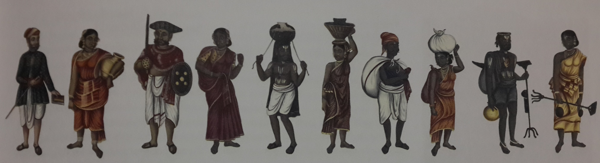

พระโพธิสัตว์ องค์ภูริทัต กล่าวว่า
ถ้าคนทำบุญได้โดยเอาไม้และหญ้าให้ไฟกิน คนเผาถ่าน คนหุงเกลือ พ่อครัว และคนเผาศพ ก็ต้องได้บุญ...
คนบูชาไฟอันไร้อินทรีย์ ไม่มีกายที่จะรู้สึก เป็นเพียงเครื่องทำการงานของประชาชน ในเมื่อคนยังทำบาปกรรมอยู่ จะไปสุคติได้อย่างไร
พวกพราหมณ์ในโลกนี้ต้องการหาเลี้ยงชีวิตก็บอกว่า พระพรหมมีอำนาจเหนือทุกสิ่งทุกอย่าง และว่าพระพรหมบูชาไฟ ก็พระพรหมมีอำนาจ ทรงสรรพานุภาพ ไม่มีใครสร้าง กลับไปไหว้ไฟที่ตนสร้างเพื่อประโยชน์อะไร
คำของพวกพราหมณ์นั้นน่าหัวเราะ ไม่ทนต่อการพินิจ ไม่เป็นความจริง พวกพราหมณ์ปางก่อนแต่งขึ้นไว้ เพราะเห็นแก่สักการะ ครั้นเมื่อลาภและสักการะไม่เกิดขึ้น พวกเขาก็จัดแต่งยัญพิธีขึ้นมา เอาการฆ่าสัตว์บูชายัญเป็นสันติธรรม
"อริยชนคือพราหมณ์ร่ายมนต์ทรงไตรเพท พวกกษัตริย์ปกครองแผ่นดิน พวกแพศย์ประกอบกสิกรรม และพวกศูทรบำเรอรับใช้" วรรณะทั้ง ๔ นี้ เข้าสู่หน้าที่จำเพาะอย่างตามกำหนดที่ชี้สั่ง เขาบอกว่า องค์มหาพรหมเป็นเจ้า ได้ทรงจัดสรรไว้
ถ้าคำนี้เป็นจริงอย่างที่พวกพราหมณ์กล่าวไว้ คนที่มิใช่กษัตริย์ก็ไม่พึงได้ราชสมบัติ ผู้ที่มิใช่พราหมณ์ก็ไม่พึงศึกษามนต์ คนนอกจากวรรณะแพศย์ก็ไม่พึงทำกสิกรรม และพวกศูทรก็จะไม่พ้นจากการรับใช้ผู้อื่นไปได้
แต่เพราะคำนี้ไม่จริง เป็นคำเท็จ พวกคนหาเลี้ยงท้องกล่าวไว้ ให้คนไม่มีปัญญาหลงเชื่อ แต่บัณฑิตทั้งหลายย่อมเห็นด้วยตนเองว่า
พวกกษัตริย์ก็เก็บส่วยจากพวกแพศย์ พวกพราหมณ์ก็ถือศัสตราเที่ยวฆ่าสัตว์ เหตุไฉน พระพรหมจึงไม่ทำโลกที่วุ่นวายผิดเพี้ยนไปเช่นนั้นให้ตรงเสีย
ถ้าพระพรหมเป็นใหญ่ในสรรพโลก เป็นจอมบดี เป็นเจ้าของชีวีของหมู่สัตว์ ทำไมจึงทรงจัดสรรทั้งโลกให้มีเรื่องเลวร้าย ทำไมไม่ทำโลกทั้งปวงให้มีความสุข
ถ้าพระพรหมเป็นใหญ่ในสรรพโลก เป็นจอมบดี เป็นเจ้าของชีวีของหมู่สัตว์ แล้วทรงต้องประสงค์อันใด จึงสร้างโลกมิให้เป็นไปโดยธรรม กลับให้มีการหลอกลวง การมดเท็จ แม้กระทั่งความมัวเมา
ถ้าพระพรหมเป็นใหญ่ในสรรพโลก เป็นจอมบดีี เป็นเจ้าของชีวีของหมู่สัตว์ ก็ชื่อว่าเป็นเจ้าชีวิตที่อยุติธรรม ทั้งที่ธรรมมีอยู่ แต่พระพรหมนั้นก็จัดสรรโลกให้ไม่เป็นธรรม...
ถ้าคนฆ่าคนฆ่าสัตว์ (บูชายัญ) แล้วจะบริสุทธิ์และผู้ถูกฆ่าจะเข้าถึงแดนสวรรค์ พวกพราหมณ์ก็พึงฆ่าพวกพราหมณ์ด้วยกัน หรือพึงฆ่าพวกที่เชื่อถ้อยคำของพราหมณ์เสียสิ
พวกเนื้อ พวกปศุสัตว์ และโคตัวไหนๆ ไม่ได้อ้อนวอนขอให้ฆ่าตัวมันเลย มีแต่ดิ้นรนต้องการมีชีวิตอยู่ในโลกนี้ แต่คนไปเอาเหล่าปศุสัตว์มาผูกเข้าที่เสาหลักบูชายัญ
แล้วพวกพาลชนก็ยื่นหน้าเข้าไปตรงเสาบูชายัญที่ผูกสัตว์ไว้ พร่ำพรรณนาถ้อยคำงามเสนาะที่แต่งสรรว่าเสาหลักบูชายัญนี้จะอำนวยสิ่งที่ปรารถนาแก่ท่านในโลกหน้า จะเป็นของยั่งยืนในสัมปรายภพ ...
ภูเขามาลาคิรี ขุนเขาหิมวันต์ ภูเขาวิชณะ ภูเขาสุทัศน์ ภูเขานิสภะ ภูเขากากเวรุ ภูเขาเหล่านี้ และภูเขาใหญ่อื่นๆ เขาบอกว่า พวกพราหมณ์ผู้บูชายัญก่อสร้างไว้
ที่พูดกันมาว่าพวกพราหมณ์ผู้บูชายัญเอาอิฐมาก่อเป็นภูเขา แต่ภูเขาหาใช่เป็นอิฐอย่างนั้นไม่ เห็นชัดๆ ว่าเป็นหิน ... เหล็กและโลหะย่อมไม่เกิดในอิฐ ที่พวกพราหมณ์พร่ำพรรณนายัญกล่าวไว้ว่า ผู้บูชายัญก่อขึ้นมา
เขาบอกว่า พราหมณ์ผู้ชาญเวท เข้าถึงคุณแห่งมนต์ ผู้มีตบะ เป็นผู้ประกอบการขอ มหาสมุทรซัดท่วมพราหมณ์นั้นผู้กำลังตระเตรียมน้ำอยู่ที่ฝั่งมหาสมุทร เป็นเหตุให้น้ำในมหาสมุทร (ถูกลงโทษให้เค็ม) ดื่มไม่ได้
แม่น้ำทั้งหลายพัดพาเอาพราหมณ์ผู้เจนจบเวททรงมนต์ไปเกินกว่าพัน น้ำในแม่น้ำเหล่านั้นก็มิได้เสียรสไป เหตุไฉนมหาสมุทรที่กว้างขวางสุดประมาณเท่านั้นจึงน้ำเสียดื่มไม่ได้
บ่อน้ำทั้งหลายในมนุษยโลกนี้ ที่เขาขุดไว้กลายเป็นน้ำเค็มก็มี แต่ไม่ใช่เค็มเพราะท่วมพราหมณ์ตาย...
ครั้งเก่าโพ้นดึกดำบรรพ์ ใครเป็นภรรยาของใคร คนก็ได้ให้กำเนิดมนุษย์ขึ้นตั้งแต่ก่อนมา ตามธรรมดานั้น จึงไม่มีใครเลวกว่าใคร การจัดแบ่งจำแนกคนก็ได้ว่ากันไปตามการงานอาชีพที่ทำมาอย่างนี้ ถึงแม้เป็นลูกคนจัณฑาลก็พึงเรียนเวทกล่าวมนต์ได้ หากเป็นคนฉลาดมีความคิด หัวของเขาก็ไม่ต้องแตกเจ็ดเสี่ยง (อย่างที่พวกพราหมณ์ว่า) ...
(ขุ.ชา.๒๘/๗๗๑-๒/๒๖๐-๒๗๐)
จาก หนังสือ "กาลานุกรม พระพุทธศาสนาในอารยธรรมโลก" โดย พระพรหมคุณากรณ์ (ป.อ.ปยุตโต) ชื่อเรื่องเดียวกัน หน้า 14-15